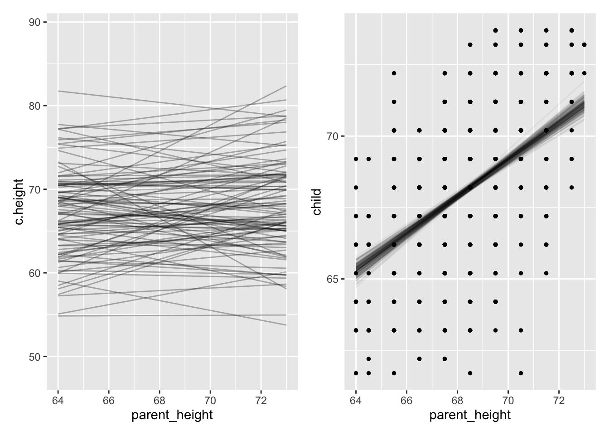

The old way does not scale well for more advanced models, nor is it especially clear
\[ y_i \sim Normal( \mu_i , \sigma )\ \]
\[\mu_i = \beta_0 + \beta_1 X_i \]
GLM
Helpful because it 1) explicitly describes the likelihood distribution 2) the parameters we are trying to model and 3) any link functions we need to use
\[ y_{i} \sim \operatorname{Bernoulli}(p_i) \]
\[\text{logit}(p_i) = \beta_0 + \beta_1 X_i \]
A working mental model
What are Bayesian models?
“Standard” regression with a different estimation algorithm.
Results that represent a distribution rather than a point estimate and some uncertainty.
Priors that incorporate existing knowledge.
Step 1 is easy
OLS i.e. \(min\sum(Y_{i}-\hat{Y})^{2}\)
R uses QR decomposition, Newton Raphson, Fisher Scoring, SVR, etc – not this equation.
More advanced stats use an even different algorithm (e.g., maximum likelihood)
So why use bayesian algo? Always works. Fewer assumptions. Lots o’ tricks: Regularization in model, imputation in model, etc.
2. Think of results in terms of distributions
Results are typically thought of as an estimate and an SE
Indicates a “best guess” ie mean/median/mode and the imprecision related to it
If this guess is far away from zero (and imprecision not large), then it is “significant”
We know that if we repeated this again we won’t get the same answer (estimate), but likely in between our CIs
First bayes example
Code
library(tidyverse)
── Attaching core tidyverse packages ──────────────────────── tidyverse 2.0.0 ──
✔ dplyr 1.1.4 ✔ readr 2.1.5
✔ forcats 1.0.0 ✔ stringr 1.5.1
✔ ggplot2 3.5.1 ✔ tibble 3.2.1
✔ lubridate 1.9.4 ✔ tidyr 1.3.1
✔ purrr 1.0.2
── Conflicts ────────────────────────────────────────── tidyverse_conflicts() ──
✖ dplyr::filter() masks stats::filter()
✖ dplyr::lag() masks stats::lag()
ℹ Use the conflicted package (<http://conflicted.r-lib.org/>) to force all conflicts to become errors
Code
galton.data <- psychTools::galton
model we want to fit
\[ child_i \sim Normal( \mu_i , \sigma )\ \]
\[\mu_i = \beta_0 + \beta_1 parent_i \]
regression with brms
Code
library(brms)
Loading required package: Rcpp
Loading 'brms' package (version 2.22.0). Useful instructions
can be found by typing help('brms'). A more detailed introduction
to the package is available through vignette('brms_overview').
Attaching package: 'brms'
The following object is masked from 'package:stats':
ar
Code
library("rstan")
Loading required package: StanHeaders
rstan version 2.36.0.9000 (Stan version 2.35.0)
For execution on a local, multicore CPU with excess RAM we recommend calling
options(mc.cores = parallel::detectCores()).
To avoid recompilation of unchanged Stan programs, we recommend calling
rstan_options(auto_write = TRUE)
For within-chain threading using `reduce_sum()` or `map_rect()` Stan functions,
change `threads_per_chain` option:
rstan_options(threads_per_chain = 1)
Attaching package: 'rstan'
The following object is masked from 'package:tidyr':
extract
Code
fit.1.bayesian <-brm(child ~ parent, data = galton.data,backend ="cmdstanr",file ="fit.1.b")
summary(fit.1.bayesian)
Family: gaussian
Links: mu = identity; sigma = identity
Formula: child ~ parent
Data: galton.data (Number of observations: 928)
Draws: 4 chains, each with iter = 2000; warmup = 1000; thin = 1;
total post-warmup draws = 4000
Regression Coefficients:
Estimate Est.Error l-95% CI u-95% CI Rhat Bulk_ESS Tail_ESS
Intercept 23.92 2.81 18.41 29.40 1.00 3946 3038
parent 0.65 0.04 0.57 0.73 1.00 3953 3059
Further Distributional Parameters:
Estimate Est.Error l-95% CI u-95% CI Rhat Bulk_ESS Tail_ESS
sigma 2.24 0.05 2.14 2.35 1.00 4585 2945
Draws were sampled using sample(hmc). For each parameter, Bulk_ESS
and Tail_ESS are effective sample size measures, and Rhat is the potential
scale reduction factor on split chains (at convergence, Rhat = 1).
what do these estimates mean?
Code
library(tidybayes)
Attaching package: 'tidybayes'
The following objects are masked from 'package:brms':
dstudent_t, pstudent_t, qstudent_t, rstudent_t
Is made up of a series of educated guesses (via our algorithm), each of which is consistent with the data.
Greater density, greater likelihood of our parameter.
Unlike CI which every value is equally plausible until it is implausible because it is out of the CI. Not just a best guess and an SE around the best guess (as with Maximum Likelihood).
In standard practice we can assume this distribution (typically normal), but with bayes it can be flexible!
Posterior distribution (ie results)
Is made of up of a series of educated guesses. Each dot represents a particular guess. Guesses that occur more often are considered more likely.
Bayes formula is analytically intractable (due to complex differential equations) so one needs to use an algorithm
Played a role in developing the thermonuclear bomb with one of the earliest computers. Published in 1953 but ignored within stats b/c it was published within a physics/chemistry journal. Took about until 1990 for desktop computers to run fast enough to do at home.
What do you mean by likely?
Three parameters in a binomial distribution (# successes, # of trials, probability of success).
Often you would fix #trials and probability of success to see what # successes are most/least likely.
Code
data.frame(heads =0:10, prob =dbinom(x =0:10, size =10, prob = .2)) %>%ggplot(aes(x =factor(heads), y = prob)) +geom_col(fill ="#562457") +geom_text(aes(label =round(prob, 2), y = prob + .01),position =position_dodge(.9),size =5, vjust =0) +labs(title ="Binomial Distribution of Coin Flips",subtitle ="n = 10, p = .2",x ="Number of Successes (Heads)",y ="Density") +theme_classic(base_size =16)
Note how this is in the form of: p(data | hypothesis)
“What is the probability of having x successes given a fixed probability of success?”
Good at rejecting some preconceived state of the world (is this coin fair), but not good at estimating p (what is the probability of heads for this coin?)
Most often we don’t know what p is
p is like the parameters we are trying to estimate in our science.
We do not know p, that is why we are running the experiment.
What we want is p(hypothesis | data).
Most often we don’t know what p is
We can look at what p is consistent with (or not) based on our data (2 successes in 10 trials) (Rather than assume some specific p).
Code
p <-seq(0.01, 0.99, by =0.01)loglike <-dbinom(2, size =10, prob = p)as.tibble(loglike) %>%mutate(p =row_number()/100) %>%ggplot(aes(y = value, x=p)) +geom_line() +ylab("likelihood")
Warning: `as.tibble()` was deprecated in tibble 2.0.0.
ℹ Please use `as_tibble()` instead.
ℹ The signature and semantics have changed, see `?as_tibble`.
“Probability attaches to possible results; likelihood attaches to hypotheses”
The first graph assumed p = .2. Probabilities are about a fixed distribution. p( data | distribution ) or p(heads | p = .2).
Likelihood is about hypotheses with fixed data. L(\(\theta\)|data) = P(data|\(\theta\)) across many theta/hypotheses. We entertained many hypotheses (p), which is why we looped it.
Bayes is just counting
What p is consistent with our data? The most consistent are more likely, but the less consistent are possible
Code
p <-seq(0.01, 0.99, by =0.01)loglike <-dbinom(2, size =10, prob = p)as.tibble(loglike) %>%mutate(p =row_number()/100) %>%ggplot(aes(y = value, x=p)) +geom_line() +ylab("likelihood")
Maximum Likelihood
ML results that we often use for MLM and SEMs are similar. But instead of focusing on the entire distribution, they give us a distribution that is centered on the most likely ie “maximum”.
We can fix the distribution around the mean estimate, and then try out different versions of SD to for the typically assumed normal distribution, maximizing or finding the most likely value.
Ultimately, what we end up with (in Bayes land) is very closely related to this ML estimate (often identical). Conceptually, though, the process is different.
The Bayesian (MCMC) algorithm tries out a bunch of parameter values. The ones that are more likely will appear more often.
What do I mean “appear” more often? The algorithm lands on that just as our coin flipping example finds .2 to be most likely, but doesn’t rule out other possibilities.
Bayesian analysis counts all ways that something can happen (according to assumptions/model). Assumptions with more ways that are consistent with data are more plausible.
This method is not demonstrably different than standard approaches. Standard likelihood approaches use the values that are most consistent with the data as an estimate. Try out all possible numbers and then tells you which one is most likely.
Where Bayes differs, is that there is no ONE result, that there are many possible results that are consistent with the data
3. Be comfortable integrating prior knowledge
Priors insert knowledge you have outside of your data into your model
This can seem “subjective” as opposed to the more “objective” way of letting the data speak.
We will mostly not “tip the scales” towards an outcome we want.
Most of the time the prior knowledge constrains plausible or implausible range of values e.g. we know an effect size of a million is very unlikely.
Often priors don’t matter…
\[ child_i \sim Normal( \mu_i , \sigma )\ \]
\[\mu_i = \beta_0 + \beta_1 parent_i \]
We need to put priors on each parameter we want to estimate, here \(b_{0}\) & \(b_{1}\) (and e).
\(b_{0}\) is the intercept and reflects average child height when parent height is centered.
We know, roughly, what average height of adults are so we can create a distribution, say ~N(66 (5.5 ft), 5). That means we are pretty sure (95%) the average height is between ~4’8 and 6`4
Code
p.0<-tibble(x =seq(from =40, to =100, by = .1)) %>%ggplot(aes(x = x, y =dnorm(x, mean =66, sd =5))) +geom_line() +scale_x_continuous(breaks =seq(from =40, to =100, by =10)) +labs(title ="mu ~ dnorm(66, 5)",y ="density")p.0
We could argue that the \(b_{1}\) parameter (which indexes the strength of association between parent and child height) is positive. But we don’t want to stack the deck.
Let’s center it around zero, saying that the most plausible estimate is no association, but that we are willing to entertain some strong effects in either direction.
In sum: we tend not to make guesses on the average parameter estimate, but instead constraints on the range of possible values. Constraints tell us how “surprised” we’d be if we get some estimate
It means, BEFORE WE SEE THE DATA we are comfortable with different regression lines. For N(0,5) this is what we would expect:
Code
pp <-tibble(n =1:100,a =rnorm(100, mean =68, sd =5),b =rnorm(100, mean =0, sd =5)) %>%expand(nesting(n, a, b), height =range(galton.data$parent)) %>%mutate(c.height = a + b * (height -mean(galton.data$parent))) g.pp <- pp %>%ggplot(aes(x = height, y = c.height, group = n)) +geom_line(alpha =1/10) +coord_cartesian(ylim =c(36, 96)) g.pp
Okay so why is this important?
A model that makes impossible predictions prior to seeing the data isn’t too useful. Why waste the effort? We often know what values are likely, given what we know about effect sizes
We entertain impossible values with standard “frequentist” methods. They have implicit priors such that all values, from negative infinity to positive infinity are equally likely.
If we use priors from a uniform distribution we will get the EXACT same results as a frequentist method.
Be comfortable with a different estimation algorithm
Think of results in terms of distributions
Be comfortable integrating prior knowledge
Tying it together
\[p(\theta | data) \propto \frac{p(data | \theta) \times p(\theta )}{p(data)}\] P(θ|data) is the posterior probability.
P(θ) is the prior probability.
p(data| \(\theta\) ) is the likelihood (really no different than ML).
p(data) can be ignored, it is just a normalized coefficient
Tying it together
p(data | \(\theta\)) is what we typically work with. What is the definition of a p-value?
We (scientists and those wanting to make decisions based on the science) don’t want that, but rather they want p(\(\theta\) | data). Inverse probability - working backwards from the data to determine the most likely underlying condition
fit.1.bayesian %>%spread_draws(b_Intercept, b_parent) %>%ggplot(aes(x = b_parent)) +stat_slab() +stat_function(data =data.frame(x =c(-2, 2)), aes(x), fun = dnorm, n =100, args =list(0, .5))
Going from prior to posterior
plusible lines prior to data –> plausible lines after data

What is confusing:
Is it a philosophically different framework? p( \({H_0}\) | D) vs p(D | \({H_0}\) ) but it doesn’t really matter. Bayesian just means using the algorithm, and again, most of us don’t have strong algo preferences. Assuming a flat prior basically makes p( \({H_0}\) |d) = p( D | \({H_0}\) ) so if you want (don’t tell Bayesians) you can interpret frequentist stats as Bayesian. And that means CIs too! (don’t tell frequentists)
Why don’t we do this already? Isn’t frequentist better? History doesn’t progress due to fair and even fights (i.e. the correct doesn’t always prevail). Computation limitations and Fisher held progress back.
What is confusing:
Technically, we don’t have p-values, but Bayesian has analogues.
Technically, there isn’t NHST (because no null distribution to create sampling distribution) but you can easily do “it”. Remember how model comparisons are equivalent to typical NHST tests?
Bayes Factors. Mostly garbage (imho) as they can be easily manipulated. But they have their place. BFs =/= Bayesian.